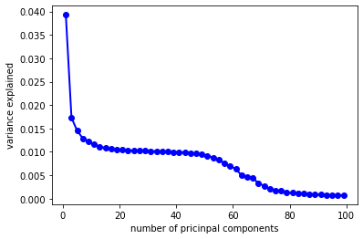

1. Problem Statement
In this project, I was trying to use the information collected from Airbnb building a predictive model to predict house price and compare different regularization methods. I scraped from Airbnb and constructed a dataset containing 12740 observations and 33 primary predictors. This is a classic regression problem, I tested regression models using three regularization tools and estimated the testing mean squared to measure the prediction accuracy of the models.
2. Collecting and Pre-processing Data
2.1 Scraping Data
There are two steps I took in this stage:
Step I: Find the links for all the available houses of each city
# SAMPLE CODE #
# 15 page for each city
links_to_scrape = []
for i in city:
for j in range(15):
template = "https://www.airbnb.com/s/"+i+"/homes?adults=2&checkin=&checkout=&tab_id=home_tab&refinement_paths%5B%5D=%2Fhomes&flexible_trip_dates%5B%5D=december&flexible_trip_dates%5B%5D=january&flexible_trip_dates%5B%5D=february&flexible_trip_dates%5B%5D=march&date_picker_type=flexible_dates&source=structured_search_input_header&search_type=search_query&flexible_trip_lengths%5B%5D=weekend_trip"
if j > 0:
more_page = "&items_offset="+str(j*20)+"§ion_offset=2"
template = template + more_page
links_to_scrape.append(template)
# %%%% scrapping urls
url_to_scrape = []
for l in range(len(links_to_scrape)):
driver.get(links_to_scrape[l])
time.sleep(15)
elems = driver.find_elements_by_xpath("//a[@href]")
for elem in elems:
url_to_scrape.append(elem.get_attribute("href"))
Step II: Find features listed on the website that could be used for prediction
# SAMPLE CODE #
for url in dta_url.iloc[:,0].to_list():
driver.get(url)
time.sleep(5)
# date and url
houses['scrapping_date'] = datetime.datetime.now()
houses['url'] = driver.current_url
# headline
try:
houses['headline'] = driver.find_elements_by_xpath('//div[@class="_b8stb0"]')[0].text
except:
houses['headline'] = ''
# house type
try:
houses['house_info'] = driver.find_elements_by_xpath('//div[@class="_tqmy57"]')[0].text
except:
houses['house_info'] = ''
2.2 Cleaning Data
In the cleaning step, I first filtered out features I would like to use in building my predicting model, then convert the non-numeric features into numbers, and setting categorical variables as dummy variable. Then, because I would like to include the house's cancel policy and host's join year in my preddictors, I also converted relevant information into date format for my prediction in the next stage.
# SAMPLE CODE #
# cancel policy
tmp = dta_houses.free_cancel.fillna('NAN')
tmp = tmp.apply(lambda x: re.sub(r'(for )|(before )',r'',x))
tmp = tmp.apply(lambda x: re.sub(r'48 hours',r'1',x))
for i in range(len(tmp)):
try:
tmp[i] = datetime.strptime(tmp[i],'%b %d').strftime('%m-%d')
except:
pass
tmp2 = dta_houses.check_in
tmp2 = pd.DataFrame(tmp2.apply(lambda x: datetime.strptime(x,'%m/%d/%Y').strftime('%m-%d')))
tmp2['cancel'] = tmp.copy()
cancel_window = []
for i in range(len(tmp2)):
try:
k = str(datetime.strptime(tmp2['check_in'][i], '%m-%d')-datetime.strptime(tmp2['cancel'][i],'%m-%d'))
k = re.findall('([0-9]+ day[s]?)',k)[0]
except:
k = tmp2['cancel'][i]
cancel_window.append(k)
2.3 Data Preview
Download Full Dataset3.3 Fitting Predictive Models On The Full Dataset
After filling the missing values, I repeated the previous steps of building regression models using three regularization parameters, following are the results of the four models.
| Model | Shrinkage Parameter | Testing Error | Predictors | Sample Size | |
| 0 | OLS | 2.23E+22 | 2897 | 12740 | |
| 1 | Ridge | 850 | 1391.80 | 2897 | 12740 |
| 2 | Lasso | 0.07 | 1350.31 | 2897 | 12740 |
| 3 | PCR | 1 | 4573.31 | 2897 | 12740 |
4. Discussion
Conclusion: The Optimal model is lasso regression with a lambda of 0.07 I also compared the results from that in section 3.1 and have found some interesting behaviors. The first thing that caught my attention is the testing errors for the regression models fitted on the full dataset are actually higher than using the smaller dataset, which is something felt quite unusual to me. As far as I am concerning, using almost 4000 more data to fit the model is expected to give better result in terms of prediction accuracy. While the idea of the missing values I filled brought more unpredictability into the dataset, I think using machine learning to fill the missing value is a resonable approach. So, to find out the reasons for such discrepancies, I took a closer look at the previous models built on the smaller dataset, and I believe I have found some possible explanations for this question. The table on the left showed the plot of the validation error which I used to choose the best hyperparameter for lasso regression, we can see that the lowest point has a mean squared error at around 1160. However, if we go back looking at the table summary in 3.1, we'll see that the final test error is actually smaller than validation error. I assume that this is because compared with the number of predictors, the sample size is too small, the prediction models did not learn anything from the training data, the results are biased. After filling the missing values, we have a higher testing error that is slightly lower than the validation error, indicting a more robust model that can be used to predict price, also the regularization effects of the latter models are more reliable.  Another interesting thing I found in my model is that regardless of the dataset I use, PCR is always the worst model with the highest predicting errors. I was curious about the result, so I made another plot showing the ration of explained variation by each component for the PCR using full dataset. We can see that the first component only explains 0.04% of the variation in the explanatory variables. My hypothesis is that under such circumstance, it might be a bit hard for principal component analysis to find a small number of components that can explain a relatively large amount of variance for the data I have, which may be the reason why PCR gives the largest testing error compared with other two models.